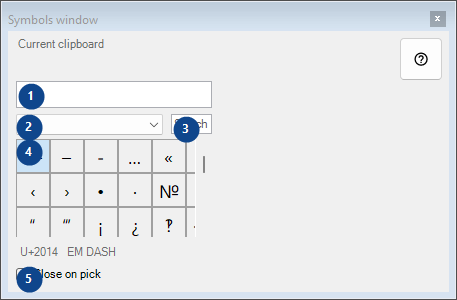
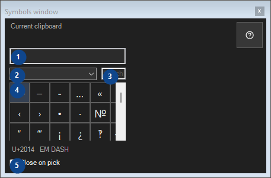

Symbols window
What this is for
A palette of rare characters: clicking copies the character to the clipboard; everything stays on this computer.


In this order
Read the numbered elements, choose the values you need, then use the window’s command to continue.
The elements
1. Current clipboard
Current clipboard
Your shortcuts2. Symbol set
Symbol set
Your shortcuts3. Search symbols
Search by name, keywords or Unicode code
Your shortcuts4. Symbols grid
U+2014 EM DASH
Your shortcuts5. Close on pick
Close on pick
Your shortcuts